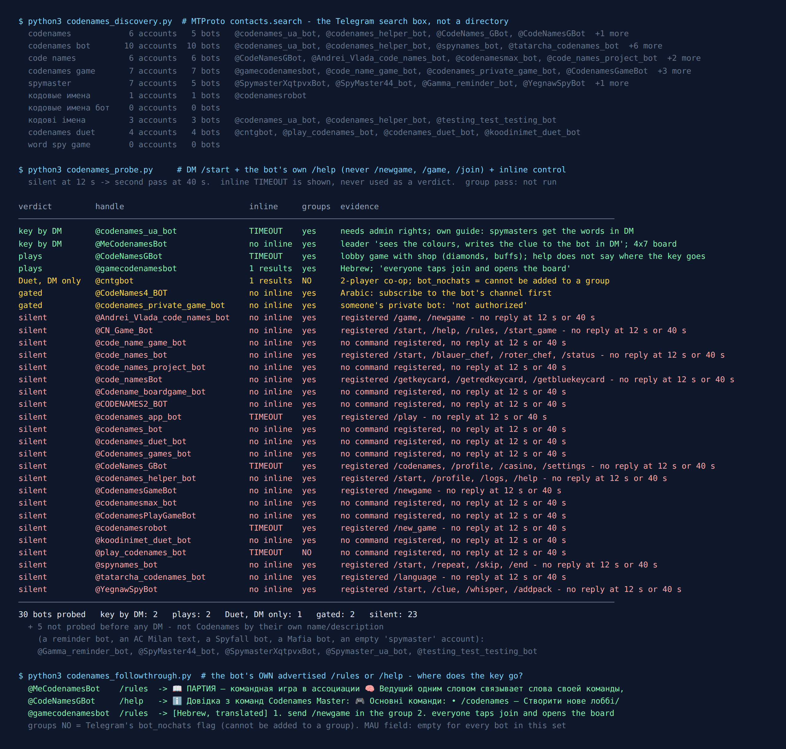

Telegram Codenames Bots: 35 Found, 7 Answered, 2 Hide the Key Properly
Codenames is a word game with one secret in it. Twenty-five words sit on the table. Two players, the spymasters, look at a small key card that says which words belong to the red team, which to the blue team, which are harmless bystanders and which one is the assassin. Everyone else sees only the words. The whole game is the spymasters trying to point their team at the right words with one-word clues, without saying anything else.
That makes it an awkward game to move into a group chat. A chat shows every message to every member. So the only interesting question about a Codenames bot is where it puts the key, and whether it is still switched on when you try it.
On the evening of 29 September 2026 I asked Telegram’s own search which Codenames bots exist, messaged every one that looked like the game, and wrote down what came back. 35 bots came back. 5 were plainly something else and I never messaged them. Of the 30 I did message, 23 said nothing at twelve seconds and again at forty. 7 answered. Two of those say in their own rules exactly how they keep the key away from the rest of the group, and both do it the same way: a private chat with the bot.

How the list was built
The list came from the platform, not from a directory. Telegram’s search box calls an API method named contacts.search, and it only returns accounts that exist right now. I ran ten queries, written down before anything was measured: codenames, codenames bot, code names, codenames game, spymaster, codenames duet, word spy game, and the Russian and Ukrainian names of the boxed game, кодовые имена, кодовые имена бот and кодові імена.
Two of those came back empty: “word spy game” and, oddly, the Russian name with “бот” on the end. The Russian name on its own found a single account. The English queries found most of the rest. The Ukrainian name returned three accounts, and one of them, @codenames_ua_bot, is at the top of the results below.
Five accounts were out before I sent anything. They matched a query only by accident: a reminder bot and an account whose description is a paragraph about AC Milan both matched “spymaster”, and so did an empty account with no description and no commands. A bot for Шпигун, which is Spyfall, a different game that I covered in the spy game census, went too, along with a Mafia bot. That left 30.
Each of those got the same three reads: /start in a private chat, then the bot’s own help or rules command if it had registered one, and an inline query as a liveness check. I never sent /newgame, /game or /join. Those create or join a game, and a stranger’s bot does not need an empty lobby from me. Anything silent at twelve seconds got a second pass at forty.
23 of 30 said nothing, twice
Most of the list is quiet. Some of the silent bots have good names (@codenames_bot, @CodenamesGameBot, @codenames_duet_bot) and some have careful command lists. @code_names_bot registered /blauer_chef and /roter_chef, a German bot with a “blue chief” and a “red chief”. @YegnawSpyBot describes itself as a team word-guessing game for groups and registered /whisper, which is exactly the command you would build for a spymaster. Neither said a word.
The one I was most sorry about is @code_namesBot. It is not a game. Its description says it generates a fresh key card, and its commands are /getkeycard, /getredkeycard and /getbluekeycard. That is the one piece of the physical game a group scattered across a chat is missing. It did not answer either.
Silence is a reading, not a death certificate. A bot can be down for an evening. But the pattern matches the earlier censuses on this site: a name that fits the search is cheap to register, and keeping the server behind it running is the expensive part.
Want a game that is definitely switched on?
The free Party Game runs inside Telegram itself, with nothing to add to your group and nothing reading the chat: Would You Rather, Never Have I Ever, Truth or Dare and quiz rounds, from two players up. It doesn’t have a Codenames mode, and I’d rather say that here than have you find out.
Open the Party Game No Telegram? It runs in a browser too: charliemorrison.dev/party-gameThe two that tell you where the key goes
@codenames_ua_bot calls itself the first Ukrainian bot for the game. It answered /start with a button to add it to a group, and its help message opens with a warning: it needs administrator rights in the group. Its own guide on telegra.ph describes a round step by step. The picture with the words goes to the group chat, and the spymasters get the words as well, “but in a private chat with the bot”. The guide’s companion page with the rules had 13,873 views when I read it, which is the only usage number anywhere in this census. Telegram’s own monthly-user field was empty for every bot in this set.
@MeCodenamesBot is Russian-language and the most detailed about the mechanics. Its /rules reply says the leader of each team “sees the colours” and sends the clue to the bot in a private message, and the bot then announces the clue in the group, where the other players open words with buttons. It also changes the board: 28 words in a 4×7 grid, with 9 for one team, 8 for the other, 10 bystanders and one assassin. The boxed game uses 25 words with 7 bystanders, so this is a slightly looser board. It also has a solo mini-game, a roulette, a shop and daily “hearts”, which tells you how it plans to pay for itself.
Both chose the same place for the secret: the one chat in Telegram that only two parties can read.
The two that play but don’t say
@CodeNamesGBot, “Codenames Master”, is Ukrainian-language and built around a lobby: /codenames opens registration in the group, /cn_join joins it. Its help lists a diamond shop and “buffs”, and its registered commands add clans and /casino. It does not say how the spymaster sees the key, and I did not start a game to find out. A sibling account with the same command list, @CodeNames_GBot, was silent.
@gamecodenamesbot is in Hebrew. Its rules say: send /newgame in the group, everyone taps “join” and opens the board, the host starts, and teams and spymasters are assigned automatically. “Opens the board” suggests each player gets their own view, which is how a spymaster could see colours that others don’t. I am reading that from one sentence, not from a game I played. It also registered /premium, /paysupport and /refund.
The other three that answered
@cntgbot plays Codenames Duet, the cooperative two-player version. Telegram’s own flag on its account says it cannot be added to groups at all, which fits: in Duet each player holds half of the key, so two private chats with the bot are the natural board. @CodeNames4_BOT answered in Arabic that I had to subscribe to its channel before using it. @codenames_private_game_bot answered “not authorized”. It looks like somebody’s private bot, and it said so politely.
Four ways a bot can hide a key in a group chat
Codenames is the fourth game on this site with the same problem: one piece of information has to reach one person inside a chat built for everyone. The card game census was about private hands, Battleship about a hidden fleet and Secret Santa about a hidden name. Telegram gives a bot four ways to do it, and they are not equally good.
1. A private chat. This is what both documented bots use. It works, with one catch the players feel on the first night: Telegram’s bot overview says bots “can’t start conversations with users. A user must either add them to a group or send them a message first.” So each spymaster has to open the bot and press Start before the game, or the bot has nowhere to send the key. A bot that asks everyone to do that during registration is doing the right thing, not being fussy.
2. A tap-to-see alert. A button under the board can answer a tap with a pop-up that only the person who tapped sees. The Bot API method is answerCallbackQuery, and its text is limited to “0-200 characters”. I counted rather than guessed: a 5×5 key drawn as coloured squares is 25 symbols plus 4 line breaks. That is 29 characters. In UTF-16 the red and blue squares take two units each, so even if every square counted double it would be 54. It fits either way. The words themselves would not fit, which is why the squares only make sense next to a board laid out in the same 5×5 grid. The trap is that anyone can tap the button. The bot has to check who tapped and answer everyone else with nothing. This is from the documentation. I did not test it in a live group.
3. An ephemeral message. Since Bot API 10.2 a bot can post a group message that only one member sees. The documentation is honest about the weakness: “It is not guaranteed that the user will receive the message, especially if they are offline.” For a key the spymaster needs for the whole game, “not guaranteed” is the wrong word. None of the bots I reached mentions it.
4. A Mini App. The board opens as a small web page inside Telegram, and each player’s page can show a different view. That removes the Start problem and the 200-character limit, and it is the same idea the board game’s own publisher uses outside Telegram: every player on their own screen.
The option that isn’t a Telegram bot at all
Codenames was designed by Vlaada Chvátil and published by Czech Games Edition in 2015, and the publisher runs an official browser version at codenames.game. Its front page describes the whole setup in five steps: enter a nickname, pick the settings, “connect with your friends using your favorite audio or video chat”, share the room link, play. The page asks for a nickname, not an account. And because every player is on their own screen, the key never has to pass through the group chat.
For a Telegram group that is a perfectly good evening: paste the room link into the chat, start a voice chat in the same group, and let the spymasters give their clues out loud. The chat stays the place where people talk, and the game runs somewhere built to keep a secret. None of the 30 bots I messaged can promise that they will be switched on next week. The publisher’s own page is the one I would bet on.
If you would rather play without any screen, the rules survive a group chat fine. The spymasters agree on a key between themselves in a private chat, one person posts the 25 words as a numbered list, and guesses go in the group as numbers. It is slower, and someone has to be honest about the assassin. But it needs nothing to be online except Telegram.
Planning a whole game night, not just one game?
The Telegram Party Pack has no Codenames in it. It is 255 prompts for the games that need no board at all: 110 Truth or Dare, 45 Never Have I Ever, 30 Would You Rather, 30 Most Likely To, 25 Paranoia and 15 Story Chain, as copy-paste text and ready-made poll blocks, with a host guide.
Get the pack — $9.99 Or see how to run a game night in Telegram without any pack.What I could not test
No group pass. Telegram does not let the account I test from create groups, and I don’t borrow strangers’ groups to test bots in. Everything here comes from private chats, from each bot’s own rules and from the flags on its account. For Codenames that is a real gap: the part that matters happens in a group. That is why the two bots at the top of the list are there for what their own rules say, and why I don’t rank the other two.
One evening, ten queries. Telegram’s search returns at most fifty accounts per query and ranks them its own way. A working bot with an unrelated name would not show up here. This is what a person finds by typing the game’s name, not a complete list of every bot on Telegram.
Silent is not dead. 23 bots said nothing twice. Some of them may be back next week. The date at the top of this page matters more than the list.
If you want to play tonight
- Everyone has a browser: codenames.game, the room link in the group, clues in a Telegram voice chat.
- It has to be a bot inside the group:
@codenames_ua_bot(Ukrainian) or@MeCodenamesBot(Russian). Give it admin rights if it asks, and have both spymasters press Start with the bot before the game. - Just the two of you:
@cntgbotfor Duet, in private chats. - Something with less setup: the party games list covers games that hold up in a bigger group, and the two-player list covers the other end.
The publisher put the board game into a browser for a reason: its one secret is small, and a screen of your own is very good at keeping small secrets. A group chat is not. Whatever you use, check where the key goes first.